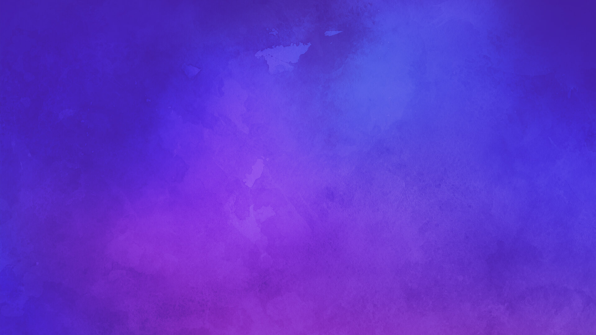

<ion-header [translucent]="true">
    <ion-toolbar color="primary">
        <ion-title>
            Shopping List
        </ion-title>
    </ion-toolbar>
</ion-header>

<ion-content [fullscreen]="true">
    <div class="title-block">
        <div class="heading">My Grocery List</div>
    </div>
    <ion-searchbar></ion-searchbar>
    <ion-list>
        <ion-list-header>
            <ion-label>Products</ion-label>
        </ion-list-header>
        <ion-item *ngFor="let note of (notes | async)">
            <ion-thumbnail slot="start">
                
            </ion-thumbnail>
            <ion-label>
                <h2>{{note.title}}</h2>
                <p>{{note.content}}</p>
            </ion-label>
            <ion-button fill="outline" slot="end" [routerLink]="'/view-note/'+note.id">View</ion-button>
        </ion-item>
    </ion-list>
    <ion-fab vertical="bottom" horizontal="end" slot="fixed">
        <ion-fab-button [routerLink]="'/add-note'">
            <ion-icon name="add"></ion-icon>
        </ion-fab-button>
    </ion-fab>
</ion-content>